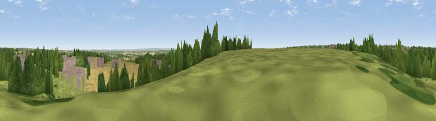

North Viewing Platform
#21944 in England · top 22% of its area beats it · near LambleyWhere it is
The exact computed spot (SK 62099 44218). Click the marker for map links.
The view, rendered

A 360° render of this exact spot computed from the terrain model, tree cover and land cover — summer colours, afternoon light, calibrated against photographs of famous viewpoints. Real trees, hedges and buildings will differ in detail.
The panorama
Grey silhouette: terrain skyline in each direction (720 bearings, Earth curvature and refraction included). Dashed green: skyline with trees (+15 m) and buildings (+8 m) as obstacles. Blue strip: how far the ground is visible on each bearing.
Where the view opens
Wedge length = distance to the farthest visible ground on that bearing (vegetation-aware). Rings at 10, 25 and 50 km.
What fills the view
33% cropland · 33% grassland · 23% woodland · 11% built-up
Angular shares of the visible panorama (visual magnitude), not map area. Landscape diversity 0.58 (0–1 Shannon).
Key numbers
More beautiful places nearby
The staircase of upgrades: each row has a higher view potential than everything closer. Driving times are estimates from straight-line distance, calibrated against real road routing — check an actual route before setting out.
| Place | Direction | Drive | Score |
|---|---|---|---|
| Viewpoint near Lambley | SW · 1 km | ~2 min | 53.1 |
| Viewpoint near Arnold | NW · 4 km | ~9 min | 64.1 |
| No Man's Lane | WSW · 18 km | ~31 min | 65.8 |
| Viewpoint near Stathern | SE · 21 km | ~35 min | 66.3 |
| Viewpoint near Stathern | SE · 21 km | ~35 min | 67.2 |
| Viewpoint near Belvoir | ESE · 22 km | ~37 min | 68.9 |
| Viewpoint near Belvoir | ESE · 22 km | ~37 min | 70.8 |
| Crich Stand | WNW · 30 km | ~47 min | 73.0 |
52.99170, -1.07631 · source: osm viewpoint · position refined by local search. Computed location — check access rights before visiting.